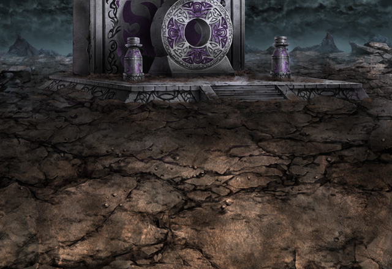
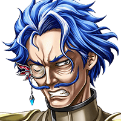
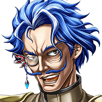
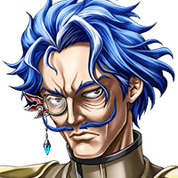
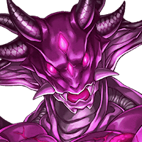
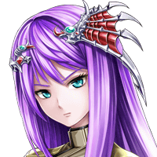

儀式を行うのに、３５分２１秒も かかってしまいましたか……。
ギャレット
グッ……この傷がなければ、 もっと早くできたものを……。
魔神は……まだ蘇ってはいない。 どうやら間に合ったようだな……。
ギャレット
もうここに辿り着いたか……。 だが……間に合ってなどいませんよ。

ギャレット
魔神を目覚めさせる儀式は…… もう完了しています！
ギャレット
戻ってこないと思ったら、 どうやら、捕まっていたようですね。
ギャレット
事を成すための時間は 十分に稼いでくれましたからね……。

ギャレット
この地に眠りし魔神よ……。 我の呼びかけに応じ……目覚めよ！！

？？？
これが……セントクリークを こんな状態にした魔神……！？
ベルツ
こいつだ……この魔神だ……！！ 俺の街……ルーチェスを滅ぼしたのは！
ベルツ
ルジーナ、お前も俺と同じ地獄を見たのなら 覚えているはずだ！！
ルジーナ
クソッ…… こうなる前に終わらせたかったんだがな。
ルジーナ
だがもう仕方がねえ、やるぞ！ Shou-chan、ベルツ、構えろ！
ギャレット
クッ……なんだ……！？ 力が……抜けていく………。
ギャレット
私の命が、 この魔神に吸われているのか……？
ティリス
早く離れて！！ それ以上、その魔神の近くにいたら……！
ギャレット
私の命などでこの魔神が蘇るのなら…… ラナス様の理想に近づけるのなら安いもの。
ベルツ
バカな！魔神のために自らの命すら 捨てるというのか！？
ギャレット
知れたこと！ 貴様たちに下るくらいなら……
ギャレット
私はすべてを捧げて ラナス様の遺志を貫く方を……選ぶ……！
ギャレット
メル……あなたもこの魔神に…… 生命を……捧げなさい……。
ギャレット
それこそが……我々の……ラナス様の…… 理想の……ため………。
ギャレット
これで………もう誰にも止められない……。 これこそが……。
ルジーナ
チッ……正気じゃねぇとは思っていたが、 こんな死に方するとはな……。
メル
了解……した……。 私も命を……捧げる……。
ティリス
やめて、メル！ そんな命令、聞かなくてもいいから！！

メル
でも、止めても……無駄。
メル
ラナス様のためにすべてを捧げること。 それが……未来のない私の存在意義。
メル
なぜ……？ 私を人形と言ったのは……あなた……。
ベルツ
ああ……。 やはり、今のお前は人形だ……。
ベルツ
この期に及んでも、 あんな命令を守ろうとするなど……。
メル
だったら…… 私のことなど放っておけば……。
ベルツ
……俺だって、 なぜお前を守ろうとしたのかわからない。
ベルツ
だが、おそらくは…… 許せなかったんだろう……。
ベルツ
こいつにこれ以上誰かの命を…… 未来を奪われるのが……。
ベルツ
それがたとえ誰であろうと……。 自分自身も含めて……。
メル
……言っていることの意味…… 理解できない……。
ベルツ
……もしお前に未来がないというのなら、 俺が作ってやろう。
ベルツ
最初の目標としては……丁度いい。 そうだろう？ ルジーナ……。
ティリス
無理して話そうとしないで！ 今すぐ治療するから……！
ベルツ
これだけは言わせてくれ……。 ルジーナ、そしてShou-chan……
ベルツ
この地で起きた過去のことのためじゃない。 俺が…俺たちがこれから作る未来のために！
ルジーナ
なにせ、こいつには、 俺もいろいろ借りがあるからな！
ルジーナ
わかってるな、Shou-chan！ こいつを全力でぶっ倒すぞ！！


{kind=link}
{kind=link}
{kind=link}
{kind=link}
{kind=link}